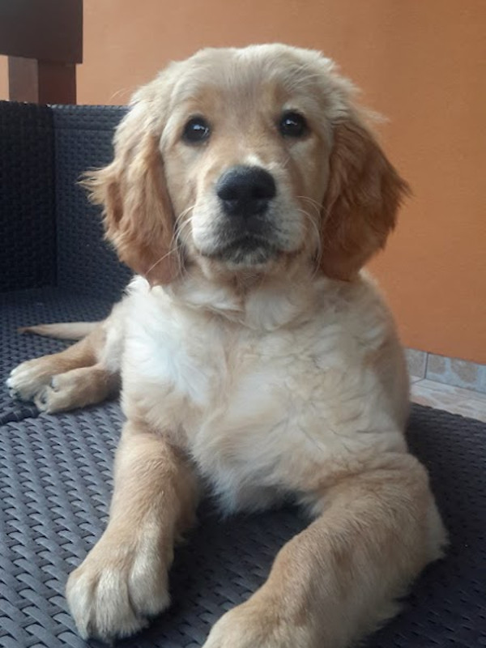
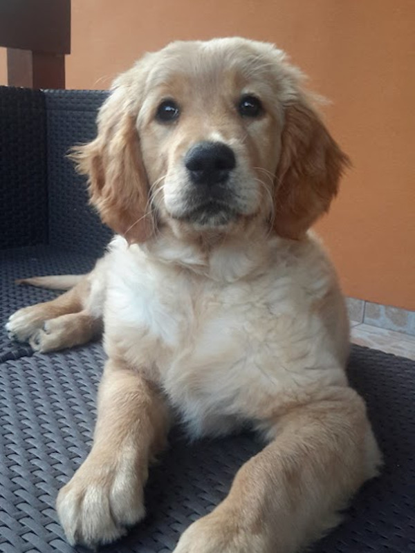

A golden retriever egy kedves, barátságos kutyafajta,
mely Skóciából származik.
A fajta tudományos megnevezése:
golden retriever - Canis lupus familiaris.
Fontos! Ha gazdi szeretnél lenni, nézz utána, hogy a felelős kutyatartással kapcsolatban milyen ajánlások és kötelezettségek vannak!
") 

Ha szeretnél még több kutyás fotót nézegetni, látogasd meg a Pixabay portál - Goldenek fotó oldalát!
A videón is láthatod, hogy Goldi nagyon szeret a földön hemperegni, amely miatt általában koszosan jövünk haza a sétából.